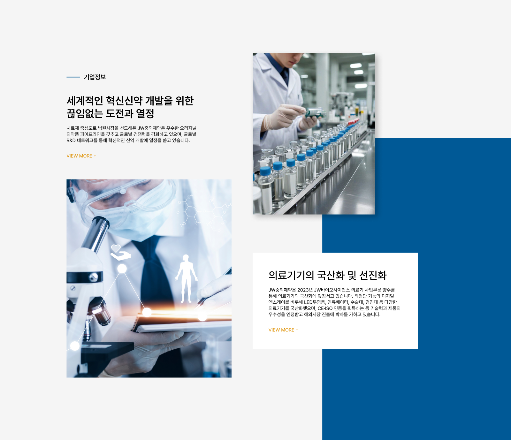
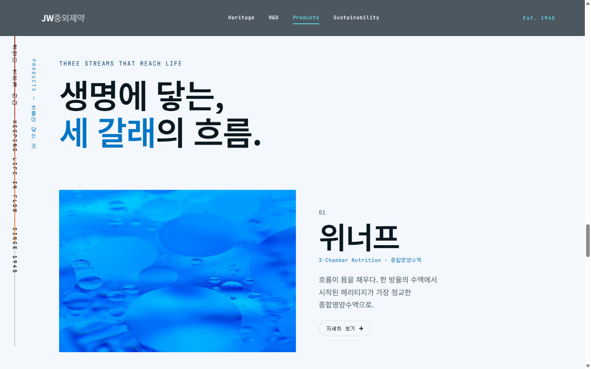
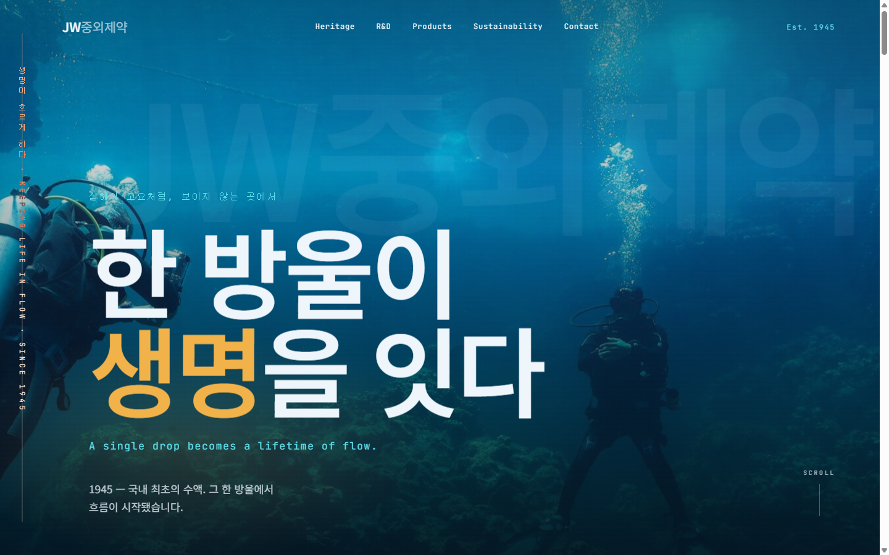
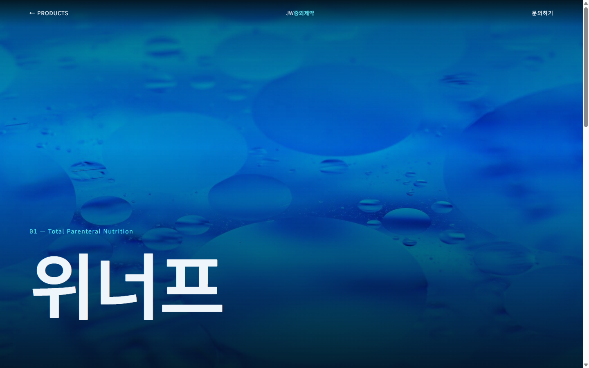
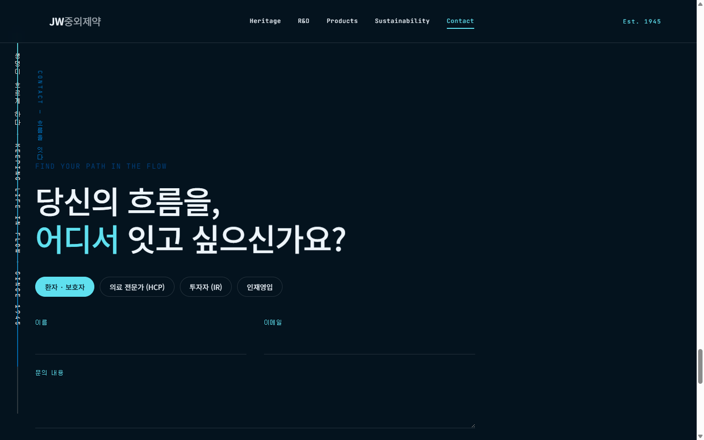

제품 상세 딥다이브
Products가 아코디언 요약으로 끝나던 막다른 골목. → 대표 1종 위너프 상세를 신설하고, 카드 이미지 → 상세 히어로를 View Transitions로 모핑. 아코디언은 빠른 정보로 유지.
UX Case Study — Human × AI
Figma 원본 디자인을 Claude Code와 협업해 여정·인터랙션· 다중 사용자군 경로까지 한 단계 더 끌어올린 과정. AI가 대신 만든 것이 아니라, 사람이 주도하고 AI와 함께 발전시킨 기록.

JW는 루트 HTML 클론이 아니라 Figma 디자인이 원본입니다. 정보 중심 구성으로 연구 역량과 브랜드 이미지를 직관적으로 전하지 못했고, 콘텐츠 위계가 불명확했습니다.

1차 리디자인은 '고요의 심해' 단일 서사로 정보 포털을 재편했습니다 — 세로 타이포 강, 다층 패럴랙스, 데이터 파티클, 세그먼트 CTA, YMYL 고지, 접근성까지 이미 견고했습니다.
그래서 v2는 이미 탄탄한 토대 위에서 여정과 연출만 심화합니다. 제품은 아코디언 요약에서 멈췄고, 사용자군 경로는 CTA로만 암시됐습니다.
→ 여기서부터가 AI 협업으로 발전시킬 지점이었습니다.
각 개선은 문제 발견 → AI 제안 → 검토·선택 → 실측 검증의 루프로. v1이 이미 완성도가 높아, v2는 여정 완결과 절제된 연출에 집중했습니다.
Products가 아코디언 요약으로 끝나던 막다른 골목. → 대표 1종 위너프 상세를 신설하고, 카드 이미지 → 상세 히어로를 View Transitions로 모핑. 아코디언은 빠른 정보로 유지.
Figma 분석에서 지적된 '무차별 CTA' 문제를 정면 해결. 환자·보호자 / 의료 전문가(HCP) / 투자자(IR) / 인재영입 세그먼트 선택 + 문의 폼으로 각자의 흐름을 잇는 종착지 신설.
R&D의 Canvas 데이터 파티클을 '흐름'에 반응시킴. 스크롤 속도에 따라 파티클이 은은하게 가속했다가 감쇠 — 심해의 고요함을 지키면서 '데이터의 흐름'을 체감시킴.
핸들을 드래그해 Figma 원본과 AI 리디자인을 비교해 보세요.



“AI가 대신 만든 것이 아니라, 내가 주도하고 AI와 협업해 더 높은 완성도로 발전시켰다.”
문제 정의와 방향의 판단은 사람이, 대안의 폭과 구현의 속도는 AI가. 그 협업의 의사결정을 결정 로그(J-D1–J-D4)로 남겨, 결과물뿐 아니라 '어떻게 발전했는가'까지 보이도록 했습니다.